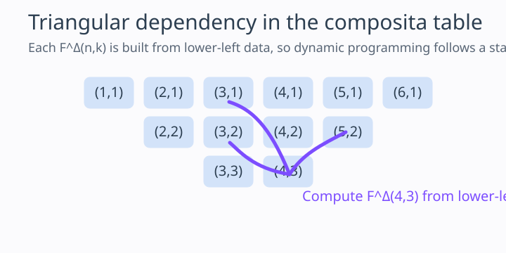

Solving \(A^{\circ 2^m}(x) = F(x)\) by the Composita Recurrence
1. Motivation from Generating Functions
The composita method is valuable because it rewrites composition into a structured coefficient problem. Instead of guessing a closed form for a half-iterate, we regard \[ F(x) = \sum_{n \ge 0} f_n x^n, \qquad A(x) = \sum_{n \ge 0} a_n x^n, \] and ask for algebraic relations between the coefficients of \(A\) and those of \(F\).
The key references for this article are the two Kruchinin papers already central to the repository: the composita paper for the recurrence itself and the iterative-equation paper for the repeated \(2^m\)-iterate root construction. The new solver mode follows exactly this explanatory order: define the coefficient machinery first, then build the root one triangular step at a time.
2. The Composita Formalism
For a generating function \(F(x)=\sum_{n>0} f(n)x^n\), its composita is defined by \[ F^{\Delta}(n,k) = [x^n] F(x)^k. \] In other words, it records the contribution to the coefficient of \(x^n\) coming from the \(k\)-fold power of \(F\).
js/engine.js.

3. The Triangular System for \(A(A(x))=F(x)\)
Once \(A(x)\) is unknown, its own composita \(A^{\Delta}(n,k)\) enters the coefficient identity for the composition \(A(A(x))\). The crucial point is triangularity: after the linear coefficient \(a_1\) is chosen, the higher coefficients can be solved sequentially.
In the simplest real branch used on the site, \(a_1 = \sqrt{f_1}\). Then the coefficient equations take the form \[ a_n\bigl(a_1 + a_1^n\bigr) + \sum_{m=2}^{n-1} A^{\Delta}(n,m)a_m = f_n, \] so each \(a_n\) is determined by previously computed data provided the denominator is nonzero.
4. From Half-Iterates to \(A^{\circ 2^m}(x)=F(x)\)
The iterative-equation paper extends the same philosophy to repeated square-root extraction. If \(B(B(x)) = F(x)\), and then \(A(A(x)) = B(x)\), one obtains \[ A^{\circ 4}(x) = F(x). \] Repeating the construction yields a model for \(A^{\circ 2^m}(x) = F(x)\).
The upgraded calculator exposes this directly through the paper depth parameter \(m\). Internally it performs successive composita-based square-root steps and then recomposes the final candidate to verify that the truncated series returns to the original target to the chosen order.
5. What the Solver Exposes
- Depth control. The browser UI now allows repeated square-root extraction, not just a single half-iterate.
- MathJax formulas. The target series, candidate series, and recomposed series are rendered formally rather than as plain text.
- Residual tables. Each displayed coefficient can be checked term-by-term, so the method remains explanatory.
- Graphical confirmation. The grapher shows the candidate and its recomposition next to the target polynomial.
Readers who want the local analytic complement should continue to the next article, where the emphasis shifts from triangular coefficient solving to fixed-point classification, local conjugacy, and the practical limits of local half-iterate constructions.
Comments